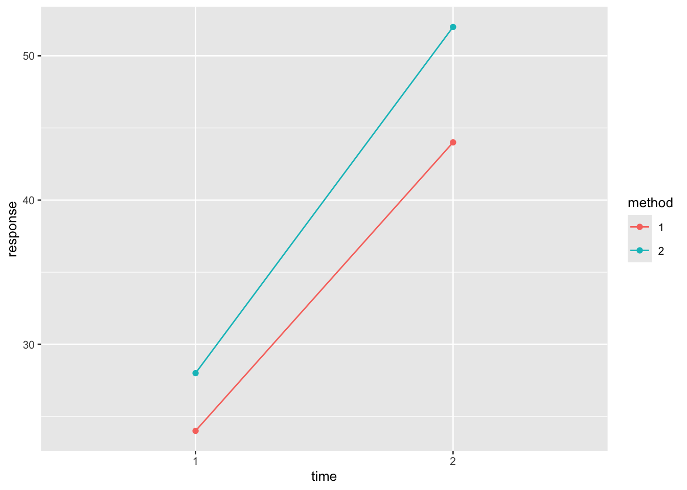
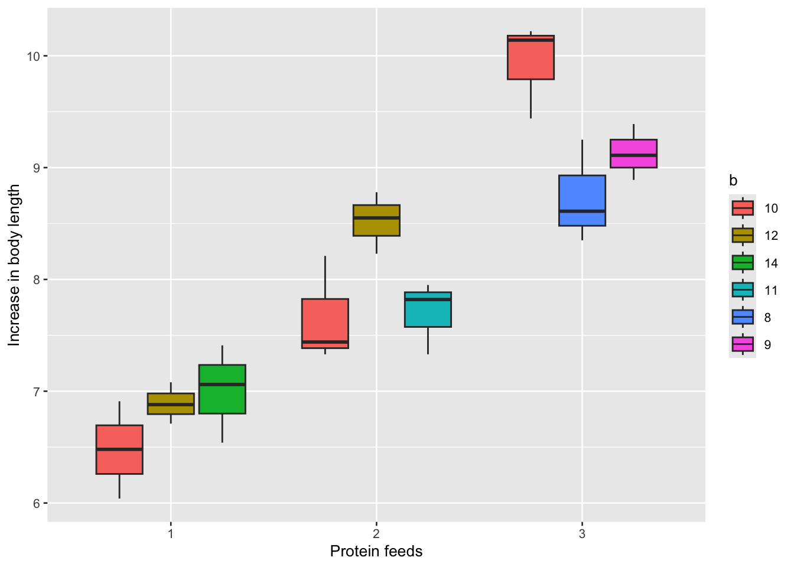

library(tidyverse)
library(ggplot2)
library(DoE.base)
library(nlme)14 Multifactor ANOVA
Multifactor ANOVA (also known as factorial ANOVA) is a statistical method used to examine the effects of two or more factors (independent variables) on a dependent variable. It allows for the analysis of the main effects of each factor as well as the interaction effects between factors. This method helps in understanding how different factors, together or separately, influence the response variable.
14.1 Prerequisite
14.2 Factorial design
Factorial design is an experimental setup that involves two or more factors, each with multiple levels, and tests all possible combinations of these factors. This design is widely used in various fields like medicine, biology, and psychology to analyze the simultaneous influence of multiple factors on an outcome.
14.2.1 2x2 two-factor factorial design
A 2x2 two-factor factorial design is a type of experimental design where two independent factors are studied, and each factor has two levels. The design tests both the main effects of each factor and the interaction effect between the two factors.
Example 1:
A experiment involved randomly dividing 20 rabbits into 4 groups, with 5 rabbits in each group, to perform a suture test after nerve injury. The treatments consisted of a combination of two factors. Factor A was the suture method, which had two levels: a1 and a2. Factor B was the time after suturing, which also had two levels: b1 and b2. The experimental results were the axon transmission rate (%) after nerve suturing for each rabbit, as shown in Table 14.1 . To compare the effects of different suture methods and post-suture times on axon transmission rates.
df <- read_csv(
file = "datasets/ex14-01.csv",
col_types = list(
method = col_factor(),
time = col_factor(),
response = col_double()
)
) | a1_1 | a1_2 | a2_1 | a2_2 |
|---|---|---|---|
| 10 | 30 | 10 | 50 |
| 10 | 30 | 20 | 50 |
| 40 | 70 | 30 | 70 |
| 50 | 60 | 50 | 60 |
| 10 | 30 | 30 | 30 |
You can use aov() function to analyze this design and test the main effects and interaction. The code would look like this:
model <- aov(response ~ method * time, data = df)
summary(model)#> Df Sum Sq Mean Sq F value Pr(>F)
#> method 1 180 180 0.600 0.4499
#> time 1 2420 2420 8.067 0.0118 *
#> method:time 1 20 20 0.067 0.7995
#> Residuals 16 4800 300
#> ---
#> Signif. codes: 0 '***' 0.001 '**' 0.01 '*' 0.05 '.' 0.1 ' ' 1Here, method * time tests both the main effects and the interaction effect.
Main effect
The main effect refers to the impact of one independent variable on the dependent variable, ignoring the other variables. In a factorial design with multiple independent variables, a main effect is the effect of one factor averaged across the levels of the other factors. It examines the effect of each independent variable in isolation.
method
The p-value for method is 0.4499, which is much greater than 0.05. This suggests that the different methods do not have a statistically significant effect on the response variable. The F value of 0.6 further indicates that the variation in the response explained by the method is weak, and there is no significant difference between the methods in terms of their impact on the outcome.
time
The p-value for time is 0.0118, which is less than 0.05, indicating that time has a statistically significant effect on the response. The F value of 8.067 supports this conclusion, showing that the response variable changes significantly across different time points.
Interaction effect
An interaction occurs when the effect of one independent variable depends on the level of another independent variable. This means that the effect of one factor is not consistent across the levels of the other factor. An interaction suggests that the variables are not independent in their effects on the dependent variable.
method : time
The p-value for the interaction effect is 0.7995, which is much greater than 0.05, indicating that there is no significant interaction between method and time. This means that the effect of the method on the response does not depend on the time. In other words, the impact of the methods is consistent across different times.
Visualizing the difference
A common way to visualize main and interaction effects is through interaction plots. If there’s no interaction, the lines for method 1 and method 2 in the graph of axon transmission rate against factor B will be parallel. This means the difference between the methods is the same regardless of factor B. If there is an interaction, the lines will cross or diverge, indicating that the effect of the method differs depending on the time after suturing.
# Draw an interaction plot
ggplot(df, aes(x = time, y = response, color = method, group = method)) +
geom_line(stat = "summary", fun = "mean") +
geom_point(stat = "summary", fun = "mean")
14.2.2 IxJ two-factor factorial design
In an IxJ two-factor factorial design, we have two factors (independent variables), each with a number of levels: Factor A has I levels (e.g., different treatments, conditions, or groups). Factor B has J levels (e.g., time points, environments, or conditions).
Example 2:
To observe the analgesic effect of combining painkillers A and B during childbirth, painkiller A is administered in three different doses: 1.0 mg, 2.5 mg, and 5.0 mg, painkiller B is also administered in three different doses: 5 μg, 15 μg, and 30 μg. A total of 27 women in labor are randomly divided into 9 groups, with 3 women in each group. The analgesic time for each woman during labor is recorded, and the results are shown in Table 14.2 . Analyze the combined analgesic effect of drug A and drug B.
df <- read_csv(
file = "datasets/ex14-02.csv",
col_types = list(
drugA = col_factor(),
drugB = col_factor(),
time = col_double()
)
) | drugA | drugB5 | drugB15 | drugB30 |
|---|---|---|---|
| 1 | 105 | 115 | 75 |
| 1 | 80 | 105 | 95 |
| 1 | 65 | 80 | 85 |
| 2.5 | 75 | 125 | 135 |
| 2.5 | 115 | 130 | 120 |
| 2.5 | 80 | 90 | 150 |
| 5 | 85 | 65 | 180 |
| 5 | 120 | 120 | 190 |
| 5 | 125 | 100 | 160 |
The ANOVA model would look like this:
model <- aov(time ~ drugA * drugB, data = df)
summary(model)#> Df Sum Sq Mean Sq F value Pr(>F)
#> drugA 2 6572 3286 8.470 0.00256 **
#> drugB 2 7022 3511 9.050 0.00190 **
#> drugA:drugB 4 7872 1968 5.073 0.00647 **
#> Residuals 18 6983 388
#> ---
#> Signif. codes: 0 '***' 0.001 '**' 0.01 '*' 0.05 '.' 0.1 ' ' 1This output represents the results of a two-way ANOVA model analyzing the effects of two drugs (A and B) and their interaction on the response variable (in this case, time).
Main effect of drugA
The F value is 8.470, p-value is 0.00256. Since this p-value is less than 0.01, the different levels of drug A significantly affect the response variable.
Main effect of drugB
The F value is 9.050, p-value is 0.00190. This is also a significant result (p < 0.01), meaning the different levels of drug B significantly affect the response variable.
Interaction effect of drugA:drugB
THe F value is 5.073, p-value is 0.00647. This p-value is significant (p < 0.01), indicating that there is a significant interaction between drug A and B. The effect of drug A on time depends on the level of drug B and vice versa. This means that the combination of the two drugs affects the outcome in a way that cannot be explained by the main effects alone.
14.2.3 IxJxK three-factor factorial design
For an IxJxK design, where the factors have I , J , and K levels respectively, performing an ANOVA will help evaluate the significance of the factors and their interactions on the dependent variable.
Suppose we want to investigate the effect of three factors on reducing blood pressure in patients. The three factors are:
- Medication type (A): 2 levels (drug 1, drug 2)
- Exercise regimen (B): 2 levels (low intensity, high intensity)
- Diet plan (C): 3 levels (low salt, mediterranean, high fiber)
This gives us a 2 \times 2 \times 3 factorial design, resulting in 12 treatment combinations. The response is blood pressure reduction after 12 weeks of treatment. You can use the aov() or lm() functions to conduct a three-way ANOVA.
# Create sample data
set.seed(200)
df <- data.frame(
a = factor(rep(c("drug 1", "drug 2"), each = 18)),
b = factor(rep(rep(c("low", "high"), each = 9), 2)),
c = factor(rep(c("low salt", "mediterranean", "high fiber"), times = 6)),
y = c(6, 9, 7, 12, 11, 9, 12, 9, 11, 10, 12, 10,
13, 14, 12, 11, 12, 14, 6, 7, 5, 9, 10, 8,
11, 12, 10, 10, 11, 9, 12, 13, 11, 13, 12, 11)
)
# Perform the three-way ANOVA
aov(y ~ a * b * c, data = df) |>
summary()#> Df Sum Sq Mean Sq F value Pr(>F)
#> a 1 5.44 5.44 1.342 0.257999
#> b 1 58.78 58.78 14.493 0.000857 ***
#> c 2 9.39 4.69 1.158 0.331193
#> a:b 1 0.11 0.11 0.027 0.869920
#> a:c 2 2.39 1.19 0.295 0.747542
#> b:c 2 0.72 0.36 0.089 0.915109
#> a:b:c 2 2.39 1.19 0.295 0.747542
#> Residuals 24 97.33 4.06
#> ---
#> Signif. codes: 0 '***' 0.001 '**' 0.01 '*' 0.05 '.' 0.1 ' ' 1lm(y ~ a * b * c, data = df) |>
anova()#> Analysis of Variance Table
#>
#> Response: y
#> Df Sum Sq Mean Sq F value Pr(>F)
#> a 1 5.444 5.444 1.3425 0.2579990
#> b 1 58.778 58.778 14.4932 0.0008569 ***
#> c 2 9.389 4.694 1.1575 0.3311928
#> a:b 1 0.111 0.111 0.0274 0.8699202
#> a:c 2 2.389 1.194 0.2945 0.7475423
#> b:c 2 0.722 0.361 0.0890 0.9151087
#> a:b:c 2 2.389 1.194 0.2945 0.7475423
#> Residuals 24 97.333 4.056
#> ---
#> Signif. codes: 0 '***' 0.001 '**' 0.01 '*' 0.05 '.' 0.1 ' ' 114.3 Orthogonal design
Factorial design tests all possible combinations of levels across all factors. It allows for the study of the main effects and interactions between the factors. Orthogonal design is a more efficient form of experimental design that requires fewer experimental runs. It selects specific combinations of factor levels in such a way that each factor’s effect can be estimated independently (orthogonally) from the others, without testing all possible combinations. This reduces the number of experimental runs compared to a full factorial design. It is widely used in quality control, optimization experiments, and clinical research.
Orthogonal designs are often used when:
- Budget or time constraints make full factorial designs impractical.
- The focus is on estimating main effects and selected interactions, not all possible interactions.
- Multiple factors need to be studied simultaneously, but a full set of combinations is unnecessary.
14.3.1 Orthogonal array
Orthogonal array (OA) is a tool used in orthogonal design to arrange factors and their levels in a way that ensures the factors are orthogonal, meaning their effects can be estimated independently.
OAs are typically represented as L_{n}(k^p), where n represents the number of experimental runs (or combinations), k is the number of levels for each factor, p is the number of factors. For example, L_8(2^7) refers to an experiment with 7 factors, each having 2 levels, and requiring 8 experimental runs.
The choice of an appropriate OA depends on the number of factors and their levels. For more complex experiments (i.e., many factors with multiple levels), larger orthogonal arrays like L_{16} or L_{18} might be suitable.
In R, you can use the DoE.base package to generate orthogonal arrays. Here’s an example of how to generate an L_8(2^7) array:
oa.design(
nruns = 8,
nfactors = 7,
nlevels = 2,
seed = 200
)#> A B C D E F G
#> 1 2 1 2 1 1 2 2
#> 2 1 1 2 2 2 1 2
#> 3 1 2 2 1 2 2 1
#> 4 2 2 2 2 1 1 1
#> 5 1 1 1 1 1 1 1
#> 6 2 2 1 1 2 1 2
#> 7 1 2 1 2 1 2 2
#> 8 2 1 1 2 2 2 1
#> class=design, type= oaOr you can use the following code:
oa.design(ID = L8.2.7, seed = 200)#> A B C D E F G
#> 1 2 1 2 1 1 2 2
#> 2 1 1 2 2 2 1 2
#> 3 1 2 2 1 2 2 1
#> 4 2 2 2 2 1 1 1
#> 5 1 1 1 1 1 1 1
#> 6 2 2 1 1 2 1 2
#> 7 1 2 1 2 1 2 2
#> 8 2 1 1 2 2 2 1
#> class=design, type= oa14.3.2 Factor assignment
In an orthogonal design like the L_8(2^7) array, the assignment of factors to specific columns does matter to maintain the orthogonality of the design and ensure balanced and unbiased results.
The L_8(2^7) array consists of 7 columns, but for an experiment with 4 factors, you will only use 4 of these columns to represent the main effects of the factors. The remaining columns can either be used for first-order (two-factor) interactions or left unused.
For an L_8(2^7) orthogonal array, the factors are typically assigned to columns 1, 2, 4, and 7. These columns in the orthogonal array are mutually orthogonal to each other, meaning that they do not introduce confounding effects, which helps you estimate the main effects of each factor independently. Columns 3, 5, and 6 are usually reserved for analyzing interactions, because these columns are designed to accommodate two-factor interactions.
Example 3:
To study the optimal conditions for egg-laying in female snails, an orthogonal experiment is designed. The experimental conditions included four factors, each with two levels. The interaction between temperature and oxygen content is considered. Ten female snails of the same age were raised in a 20 cm² mud box. The combinations of each factor and level for the 8 experiments, as well as the experimental results, are shown in Table 14.3 .
df <- read_csv(
"datasets/ex14-03.csv",
col_types = list(
temp = col_factor(), oxygen = col_factor(),
water = col_factor(), ph = col_factor(),
n = col_integer())
)| temp | oxygen | water | ph | n |
|---|---|---|---|---|
| 1 | 1 | 1 | 1 | 86 |
| 1 | 1 | 2 | 2 | 95 |
| 1 | 2 | 1 | 2 | 91 |
| 1 | 2 | 2 | 1 | 94 |
| 2 | 1 | 1 | 2 | 91 |
| 2 | 1 | 2 | 1 | 96 |
| 2 | 2 | 1 | 1 | 83 |
| 2 | 2 | 2 | 2 | 88 |
Use the aov() function to perform ANOVA on the orthogonal design. You can model main effects and interaction terms if necessary.
aov(n ~ temp * oxygen + water + ph, data = df) |>
summary()#> Df Sum Sq Mean Sq F value Pr(>F)
#> temp 1 8.0 8.0 3.2 0.2155
#> oxygen 1 18.0 18.0 7.2 0.1153
#> water 1 60.5 60.5 24.2 0.0389 *
#> ph 1 4.5 4.5 1.8 0.3118
#> temp:oxygen 1 50.0 50.0 20.0 0.0465 *
#> Residuals 2 5.0 2.5
#> ---
#> Signif. codes: 0 '***' 0.001 '**' 0.01 '*' 0.05 '.' 0.1 ' ' 1These results suggest that water and the interaction between temperature and oxygen have significant effects on the response variable, the other individual factors might not be as important for this particular response.
14.4 Nested design
A nested design is a type of experimental design where levels of one factor are nested within the levels of another factor. This is useful when the experimental units within a group are not comparable across groups but are comparable within groups. For example, in a medical study, hospitals might be a factor, and patients might be nested within hospitals because patients from different hospitals are not directly comparable.
In a nested design, factors are hierarchical. Below is a two-level nested design:
- Hospitals (A) as a primary factor.
- Doctors (B) nested within each hospital.
- Patients’ satisfaction score as the response variable.
Example 4:
To study the short-term effects of different protein feeds at different feeding amounts on the growth in body length of rats, a nested design was adopted due to the inconsistent feeding amounts required to achieve the same protein content for each protein feed. The type of feed is treated as the primary experimental factor (a), and the feeding amount as the secondary experimental factor (b) nested within the type of feed. Three rats are fed per trial, and the net increase in rat body length is the response variable. Perform an ANOVA analysis based on this data.
df <- read_csv("datasets/ex14-04.csv",
col_types = list(a = col_factor(), b = col_factor()))Here’s how you can handle such a nested design and analyze it using ANOVA.
aov(response ~ a + a:b, data = df) |>
summary()#> Df Sum Sq Mean Sq F value Pr(>F)
#> a 2 27.630 13.815 96.405 2.41e-10 ***
#> a:b 6 4.107 0.684 4.776 0.00445 **
#> Residuals 18 2.579 0.143
#> ---
#> Signif. codes: 0 '***' 0.001 '**' 0.01 '*' 0.05 '.' 0.1 ' ' 1aov(response ~ a/b, data = df) |>
summary()#> Df Sum Sq Mean Sq F value Pr(>F)
#> a 2 27.630 13.815 96.405 2.41e-10 ***
#> a:b 6 4.107 0.684 4.776 0.00445 **
#> Residuals 18 2.579 0.143
#> ---
#> Signif. codes: 0 '***' 0.001 '**' 0.01 '*' 0.05 '.' 0.1 ' ' 1The results show that different proteins quality diet affects the growth of body length in rats. For the same protein feed, different feeding mice also had an effect on the length growth of rats.
Visualizing the nested design
ggplot(df, aes(x = a, y = response, fill = b)) +
geom_boxplot() +
labs(x = "Protein feeds", y = "Increase in body length") 
14.5 Split-plot design
A split-plot design is used when there are two levels of randomization or when some factors are easier to control than others. This is common in medical studies where some treatments are applied to larger groups (whole plots), and others are applied to subgroups (subplots or split plots) within those larger groups.
For example, if you want to study the effect of two whole-plot factors (e.g., different exercise regimens) on patients, but you also want to study the effect of a subplot factor (e.g., different dosages of a medication) within each exercise regimen. The design would look like:
- Whole-plot factor: Exercise regimen (e.g., low-intensity vs. high-intensity).
- Subplot factor: Medication dosage (e.g., 10 mg vs. 20 mg) applied within each exercise group.
This allows for efficient testing of interactions between exercise regimens and medication dosages while considering the hierarchical structure of the treatments.
Example 5:
To study the protective effect of systemic injection of antitoxin on skin damage, 10 rabbits were randomly divided into two groups. One group was injected with antitoxin, while the other group was injected with saline as a control. After grouping, two areas on each rabbit were selected, and low and high concentrations of toxin were randomly injected into these areas. The response variable is the diameter of the skin damage (mm). Perform an ANOVA analysis based on this data.
df <- read_csv("datasets/ex14-05.csv", show_col_types = F)By using a mixed-effects model, you can appropriately analyze the hierarchical structure of the data.
tb <- df |>
pivot_longer(
cols = c(b1, b2),
names_to = "b",
names_prefix = "b",
values_to = "y"
) |>
mutate(across(c(no, drug, b), factor))
lme(y ~ drug * b, random = ~ 1 | no, data = tb) |>
anova() #> numDF denDF F-value p-value
#> (Intercept) 1 8 3440.953 <.0001
#> drug 1 8 28.006 0.0007
#> b 1 8 252.049 <.0001
#> drug:b 1 8 0.450 0.5212Alternative method using aov():
aov(y ~ drug * b + Error(no/b), data = tb) |>
summary()- 1
-
here
nomust be a factor.
#>
#> Error: no
#> Df Sum Sq Mean Sq F value Pr(>F)
#> drug 1 63.01 63.01 28.01 0.000735 ***
#> Residuals 8 18.00 2.25
#> ---
#> Signif. codes: 0 '***' 0.001 '**' 0.01 '*' 0.05 '.' 0.1 ' ' 1
#>
#> Error: no:b
#> Df Sum Sq Mean Sq F value Pr(>F)
#> b 1 63.01 63.01 252.05 2.48e-07 ***
#> drug:b 1 0.11 0.11 0.45 0.521
#> Residuals 8 2.00 0.25
#> ---
#> Signif. codes: 0 '***' 0.001 '**' 0.01 '*' 0.05 '.' 0.1 ' ' 1